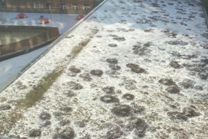
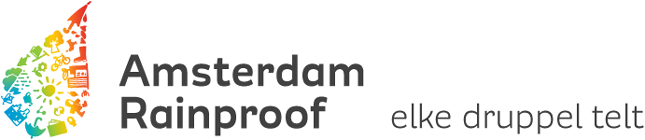
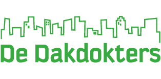

Welkom
Je ziet ze steeds meer in Amsterdam: groene daken. Ze zijn niet te missen en goed voor van alles. Zo isoleert het goed, zorgt het voor een goede afvoer van regenwater en verbetert het de luchtkwaliteit. Op deze website ben je aan het juiste adres om alles te verkennen en te ontdekken wat groene daken te bieden hebben!
Duurzaam
Wat maken groene daken zo duurzaam?
-
Isolatie:
Comfort in elk seizoen. -
Regenwaterbeheer:
Voorkomt overstromingen. -
Luchtverfrissing:
Natuurlijke luchtverfrissers. -
Dierenparadijs:
Mini-jungle voor planten en dieren. -
Dak-levensverlenger:
Beschermt en verlengt levensduur. -
Energie-efficiëntie:
Minder energieverbruik. -
Hippe uitstraling:
Cool groen element. -
Stilteplekje:
Geluiddempend. -
Hittevermindering:
Tegen het hete stadseffect.
Groene daken, multitaskers voor een groenere stad!
Amsterdam
Heel leuk die groene daken, maar wat vind je er nou daadwerkelijk van terug in Amsterdam? Het zal je verbazen hoeveel groene daken er zijn in Amsterdam. Zo zijn er zelfs groene daken op het HvA! Bijvoorbeeld bovenop de Studio Hogeschool van Amsterdam. Dit is goed te zien vanaf het binnen in het Theo Thijssenhuis en Kohnstammhuis. Dit is natuurlijk niet de enige plek, er zijn ontelbaar voorbeelden, dus ik zou zeggen ga er zelf op uit!
Geïnteresseerd?
Denk jij nou terwijl je deze website aan het bekijken bent, 'wauw! Dat wil ik ook hebben!'? Dan hebben wij het uitzoeken al voor je gedaan. Er zijn ten slotte zo veel bedrijven die de groene daken aanleggen dat het lastig is om overzicht te hebben wat het beste resultaat geeft.
Op nummer 1 staat RainProof
een bedrijf die erg groot en goed geregeld is in Amsterdam. Het bedrijf scoort gemiddeld 5 sterren van de 5 en heeft een uitstekende prijs/kwaliteit verhouding.
Nummer 2:De Dakdokters
dit bedrijf staat ook bekend als uitstekend, goede service en lage prijzen. Dit bedrijf scoort gemiddeld een 4,7 van de 5.
Contact
Is jou interesse gewekt, maar heb je nog vragen? Denk er dan niet twee keer over na en neem contact met ons op! Mail: wij staan elke dag van 10:00 tot 17:00 voor je klaar. Telefoon:
Maandag t/m vrijdag: 10:00-17:00
Zaterdag: 13:00-17:00
Zondag: Gesloten